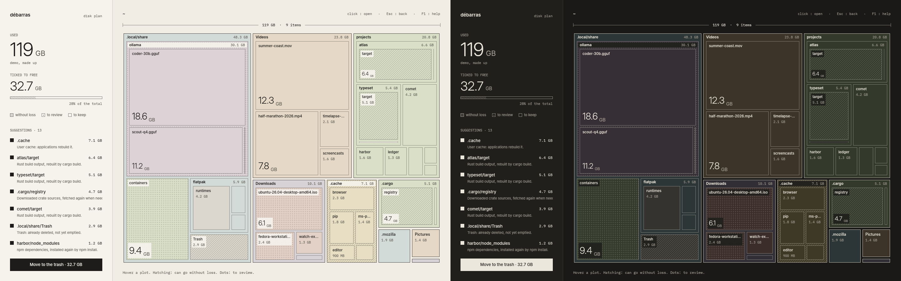

See what fills your disk.
Free what can go.
Débarras draws your disk as an architect's plan. Each plot is as large as what it holds, and the plan marks what you can free without losing anything.

Big things look big.
A folder is drawn with what it holds inside it, three levels deep. Click to go in, right click to come back.
Hatching: can go
Build output, dependencies, caches, the trash. Rebuilt or downloaded again when needed: nothing is lost.
node_modules · target · .cacheDots: to review
Large, and only you can judge: games, local AI models, container images, old disk images.
Steam · ollama · .isoPlain: yours
Everything else keeps its family colour, and Débarras says nothing about it. A rule marks a folder only when its name leaves no doubt.
Documents · PicturesTick, add up
Tick what you would free; the panel adds it up, with its share of the disk. The suggestions list the largest marked items.
Ticked to free · 14.2 GBHonest sizes
The space really taken on the disk. One file system, no link followed, a hard-linked file counted once, as du does.
du -sxh ~Yours to dress
Warm paper and ink, light and dark following the system, a dozen readable themes, English and French, in the settings. The last folder opens again at launch.
Dracula · Nord · GruvboxThen free it: a summary lists every ticked item with its size, and you choose: the system's trash, to change your mind later, or deleting for good, to get the room back now.
Install
Start Débarras, then scan your home folder, choose another one, or look at the demo first.
Windows 10 or 11, 64-bit. Installs for your user only, no administrator rights needed.
Download the installer or the .zip, to install nothing
The files are not signed. If SmartScreen shows “Windows protected your PC”, click More info, then Run anyway.
Apple Silicon and Intel, macOS 11 or later. Open the .dmg and drag Débarras to Applications.
The app is not notarized, so the first launch needs Open Anyway in System Settings, Privacy & Security.
A prebuilt package ships with every release, no compiler needed. pacman then tracks it as debarras.
curl -LO https://github.com/alarboulletmarin/debarras/releases/latest/download/debarras-x86_64.pkg.tar.zst
sudo pacman -U ./debarras-x86_64.pkg.tar.zstDébarras is compiled on your machine. Install the libraries, Rust (the one from apt is usually too old), then build.
sudo apt install build-essential pkg-config libfontconfig-dev libfreetype-dev \
libwayland-dev libxcb1-dev libxkbcommon-dev libxkbcommon-x11-dev libvulkan1
git clone https://github.com/alarboulletmarin/debarras.git
cd debarras
make
sudo make installSame steps as Debian, with these packages. Install Rust too.
sudo dnf install gcc pkgconf-pkg-config fontconfig-devel freetype-devel \
wayland-devel libxcb-devel libxkbcommon-devel libxkbcommon-x11-devel vulkan-loader
git clone https://github.com/alarboulletmarin/debarras.git
cd debarras
make
sudo make installYou need the development files of fontconfig, freetype, Wayland, libxcb and libxkbcommon, a Vulkan driver and Rust 1.88 or later.
git clone https://github.com/alarboulletmarin/debarras.git
cd debarras
make
sudo make installWith make install, Débarras adds the debarras command, an application menu entry and its icon; sudo make uninstall removes them. Full steps for each system.